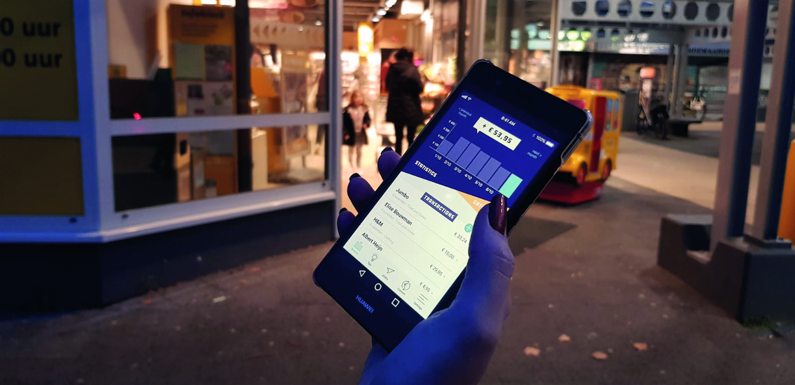
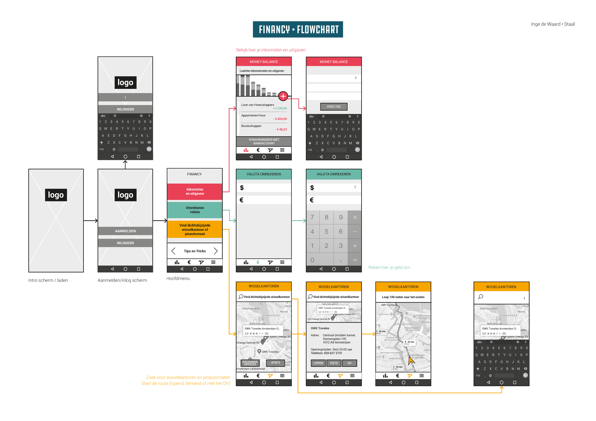
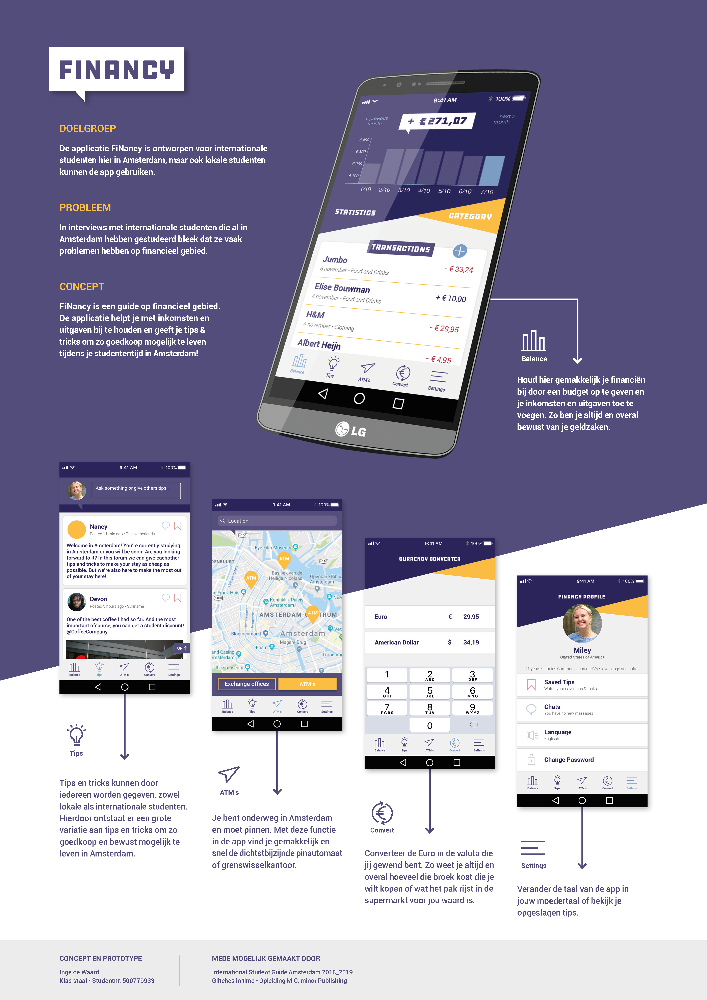

De opdracht
Maak een digitale applicatie als aanvulling op de International Student Guide Amsterdam.
Het idee
FiNancy is een financiële guide voor internationale studenten in Amsterdam. In de app kan de student tips lezen over alles wat met geld te maken heeft. Ook kan de student zijn eigen financiën bijhouden. Dit zorgt voor een zorgeloos verblijf in Amsterdam.
Het proces
Het ISGA project kwam voort uit een al bestaande huisstijl. Hier ben ik eerst een analyse van gemaakt en daarna een doelgroep onderzoek. Wat vinden de internationale studenten in Amsterdam nou vervelend of waar lopen ze tegen aan? Het bleek dat ze geldzaken moeilijk vonden. FiNancy helpt ze om geen zorgen te hebben over geldzaken. In de app staan daarom drie elementen centraal: inkomsten en uitgaven bijhouden, een valuta omreken-functie en een ATM zoekmachine.
Testen
Bij het testen van mijn prototype bleken de iconen te onduidelijk. Ik heb dit aangepast door de iconen specifieker te maken en er tekst onder te zetten.


Pitch poster
Alle functionaliteiten zijn uitgelegd in de pitchposter:
